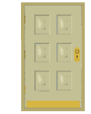
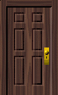

link do poczty link do pliku środek tekstu koniec tekstu link do tabeli link do formularza
Walidacja w naukach technicznych i informatyce działanie mające na celu
zrzut ekranu Mateusz Mateusz Mateusz Mateusz Mateusz Mateusz Mateusz Wesołowski Wesołowski Wesołowski Wesołowski Wesołowski Wesołowski :) szczęście :D duże szczęście :o zdiwienie :'( płacz -_- zmęczenie <3 serce 80-299 , Gdańsk, spacerowa , ,7/23.
Matt Damon
Linkin Park 1 stycznia 1975r. H2 SO4
x* x=x2
żart o pracowniku
To niezły pracownik
żart o pukaniu do drzwi
puk puk


-puk puk!
-komornikom nie otwieram
link do poczty link do pliku początek tekstu koniec tekstu link do tabeli link do formularza żart o blondynce
puk puk
poniżej są trzy wyliczenia z różnymi znakami wyliczenia
Ty zaproponuj swoje, związane z informatyką
iweofewofwefr
poniżej są trzy numerowania z różnymi znakami numerowania
Ty zaproponuj swoje, związane z informatyką
12321312312321321312321
1324
1234
1234
12321312312321321312321
1324
1234
1234
12321312312321321312321
1324
1234
1234
poniżej będą trzy poziomy numerowania/wyliczenia z różnymi rodzajami numerowania/wyliczenia
Ty zaproponuj swoje, związane z informatyką
Popularne interfejsy urządzeń peryferyjnych do komputera:
Interfejsy na przesył obrazu
HDMI
Type A
Type B
Type C
Type D
Type E
DVI
D-SUB
Interfejsy na przesył audio
Jack
Jack 6,3mm
Jack 3,5mm
Jack 2,5mm
Interfejsy na przesył danych
USB
Type A
Type B
Mini A
Mini B
Mini AB
link do poczty link do pliku początek tekstu środek tekstu link do tabeli link do formularza